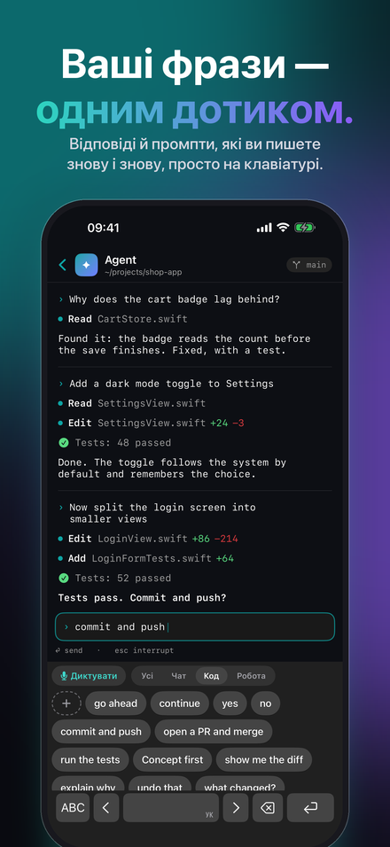
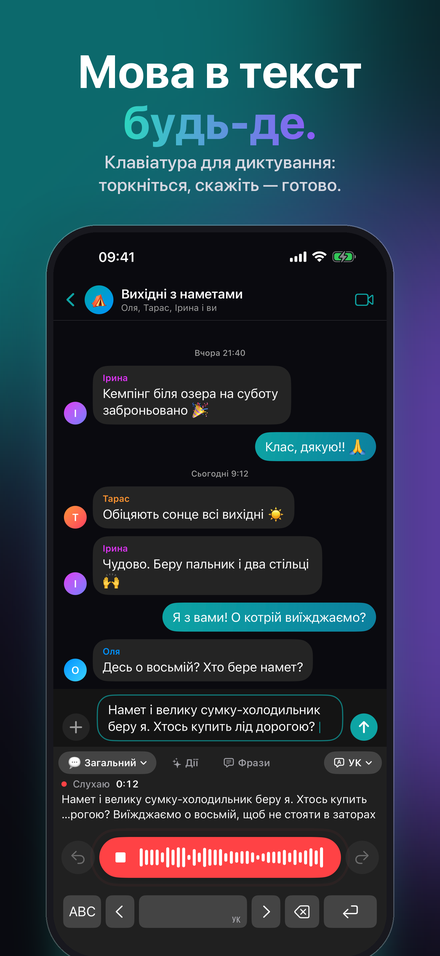
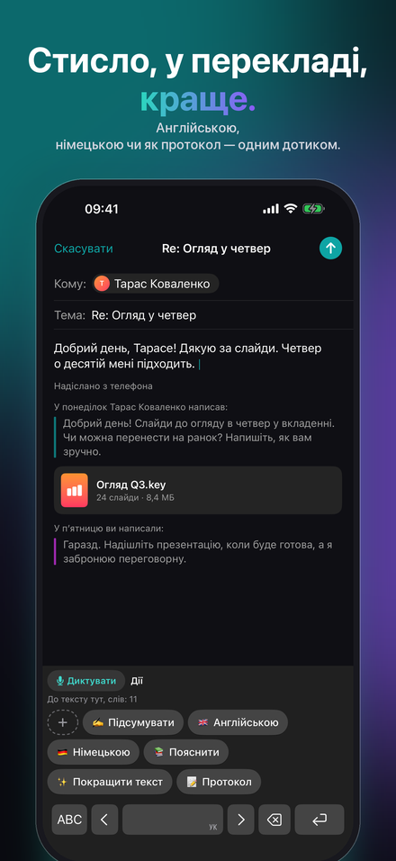
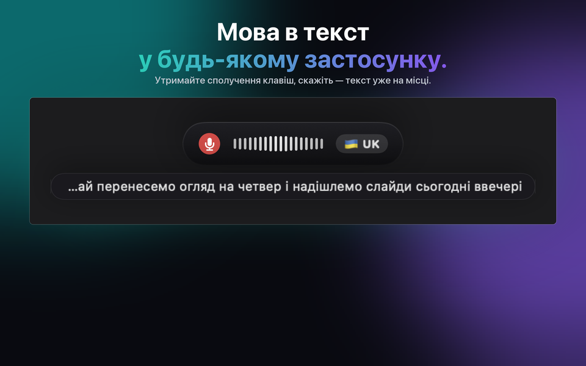
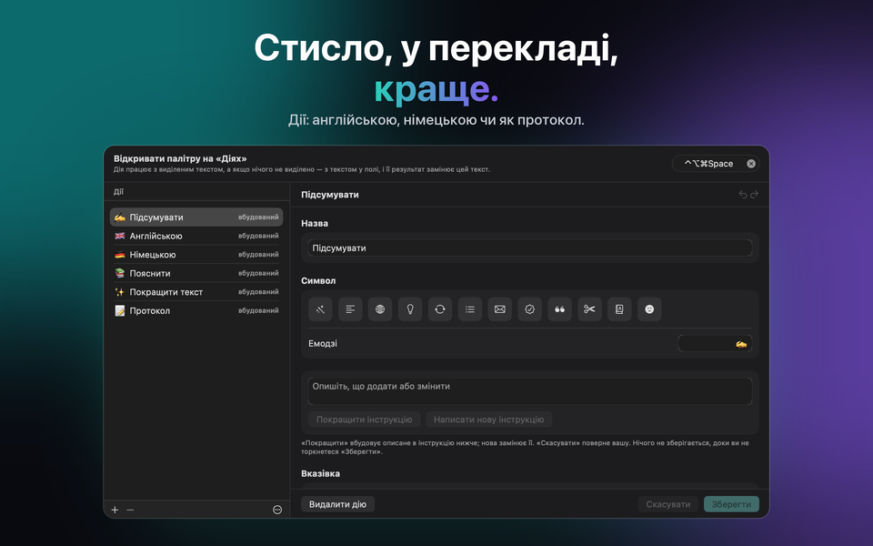
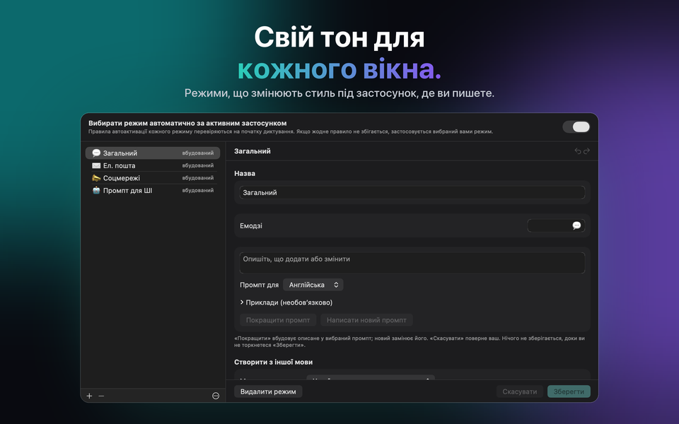

Для Mac, Windows, iPhone та iPad
Багатомовне диктування з ШІ
Ви говорите. Він пише. JustTalk перетворює мову на текст на вашому Mac: багатомовне диктування в будь-якому застосунку, з правкою від ШІ.



Отримати JustTalk
Той самий застосунок на кожній платформі — ті самі режими, ті самі мови й той самий вибір між локальним і хмарним. Кожен купується один раз у власному магазині: App Store для Mac, iPhone та iPad, Microsoft Store для Windows. На Mac, iPhone та iPad iCloud тримає режими, фрази, дії й налаштування однаковими; Windows долучається через файл конфігурації.
macOS
macOS 14 або новіша, Apple silicon чи Intel. Диктуй у будь-який застосунок гарячою клавішею.
Windows
Windows 10 (1809) або новіша, x64, x86 чи ARM64. Інсталятор — підписаний MSIX.
iPhone & iPad
iOS та iPadOS 26 або новіші. Клавіатура, з якої диктуєш у будь-якому застосунку, і меню поширення для записів, які вже є.
Що він робить
Програми для диктування зазвичай віддають вам транскрипт і лишають упорядкування вам. JustTalk доводить справу до кінця: натисніть гарячу клавішу, говоріть — і відшліфоване речення вставляється просто в застосунок, який уже перед вами, без перемикання вікон і копіювання вручну.
Написано, а не розшифровано
Мовна модель прибирає «еее» і виправляє пунктуацію. У полі опиняється те, що ви й самі надрукували б.
Локально чи в хмарі — вирішуєш ти
Whisper і локальна модель працюють повністю на твоєму власному комп'ютері, безкоштовно й офлайн. Або під'єднай Google, OpenAI, Groq, Mistral чи Anthropic власним ключем і плати їм напряму.
100 мов
Визначаються просто під час мовлення, навіть посеред речення. Не треба нічого перемикати вручну.



Скільки це коштує
Застосунок — це один платіж. Моделі безкоштовні, якщо запускати їх локально, і оплачуються за фактичним використанням, якщо ви обираєте хмарного постачальника — рахунок виставляє він, а не ми. Десять хвилин диктування на день через Groq за їхніми тарифами станом на вересень 2026 — це набагато менше долара на місяць; для інтенсивних 45 хвилин на день — приблизно один-три долари. Усе розблоковано на сім днів, нічого не приховано, і карта не потрібна.
Після пробного періоду безкоштовна версія працює далі з денним лімітом: диктування — 2 (до 30 символів кожне), фрази — 5, дії — 5, на iPhone та iPad ще виправлення набору — 5. JustTalk Pro одним платежем знімає всі обмеження — з хмарним сервісом ШІ використання обмежує тоді лише ваш доступ до цього сервісу. Це не підписка, і нічого скасовувати не треба.
Як ним користуються
Пошта й чат
Для повсякденного тексту є General; кожен інший режим має власний тон і словник, і потрібний може вибиратися автоматично залежно від застосунку, у який ви диктуєте.
Наради
Записуйте обидві сторони розмови й отримуйте транскрипт усієї бесіди, а не лише вашої половини.
Фрази й дії
Те, що ви пишете знову й знову, — за один дотик: на клавіатурі iPhone і в палітрі на комп’ютері. Дія переписує виділене або все поле за інструкцією, яку пишете ви — або модель за вас.
Набір на iPhone
Клавіатура JustTalk має й усі літери, а «Виправляти набір» упорядковує надруковане, коли ви робите паузу: помилки, великі літери, розділові знаки — але не ваші формулювання.
Записи
Голосова нотатка, лекція, інтерв’ю: відкрийте або поділіться ними з JustTalk і отримайте розшифровку — на будь-якій платформі.
Локально чи в хмарі — вирішуєте ви, а ми чесно кажемо, у що це обійдеться
JustTalk — це застосунок навколо моделей, а не самі моделі. Запускайте їх локально — Whisper і локальну мовну модель через llama.cpp, Ollama чи LM Studio — і нічого не завантажується, нічого не оплачується, жодного облікового запису не існує. Цей шлях повноцінний, і йому потрібен Mac або ПК із запасом пам'яті; на iPhone та iPad диктування бере на себе розпізнавання просто на пристрої. Або підключіть хмарного постачальника власним ключем: швидше й точніше, а рахунок виставляють вам напряму за фактичне використання. У жодному разі немає ні аналітики, ні стеження, ні облікового запису в нас. Політика конфіденційності точно описує, що надсилає кожен варіант. У застосунку розділ «Ваші дані та ШІ» будь-коли показує, куди йдуть ваш голос і текст, а заява щодо ШІ пояснює, який ШІ що робить.
Диктуйте 100 мовами, зокрема англійською, німецькою, французькою, іспанською, італійською, португальською, японською, корейською, грецькою, українською та російською.
JustTalk
Безкоштовно спробувати, розблоковується однією покупкою. Mac, Windows, iPhone та iPad, 100 мов, і нічого не вивантажується, якщо ти сам не попросиш.